Introduzione all’analisi nel dominio della frequenza nei sistemi di controllo
Transizione dall’analisi nel dominio del tempo all’analisi nel dominio della frequenza
Concetto 1: comprendere il cambiamento di prospettiva
Analisi nel dominio del tempo: in precedenza, abbiamo discusso il metodo del luogo delle radici, che si concentra principalmente sul dominio del tempo. Questo metodo è intuitivo per visualizzare le prestazioni transitorie attraverso i poli a circuito chiuso.
Analisi nel dominio della frequenza: ora sposteremo la nostra attenzione sull’analisi nel dominio della frequenza. Questo approccio offre una prospettiva diversa, enfatizzando la risposta in stato stazionario dei sistemi di controllo agli input sinusoidali.
Confronto e pertinenza
Contesto storico: Storicamente, i metodi nel dominio della frequenza sono stati sviluppati prima del luogo delle radici, ma per ragioni pedagogiche abbiamo iniziato con quest’ultimo.
Prestazioni transitorie e stazionarie: nell’analisi nel dominio della frequenza, la comprensione delle prestazioni transitorie è meno diretta rispetto al metodo del luogo delle radici. Comprendere il transitorio in termini di zeri e poli è molto semplice.
Nell’analisi nel dominio della frequenza, la comprensione dei risultati richiede un approccio più astratto, poiché il metodo presenta un modo indiretto di interpretare il comportamento del sistema. Ciò contrasta con il metodo del luogo delle radici, in cui l’interpretazione delle prestazioni del sistema è più semplice e diretta, principalmente perché rappresenta visivamente le dinamiche del sistema nel dominio del tempo.
Formalismo nel dominio della frequenza
Concetto 2: Fondamenti dell’analisi nel dominio della frequenza
Robustezza dei metodi nel dominio della frequenza: un vantaggio significativo dell’analisi nel dominio della frequenza è la sua robustezza, il che significa una minore dipendenza dall’accuratezza del modello del sistema. Questo è fondamentale poiché ottenere un modello accurato può essere difficile. Questo è uno dei motivi principali per cui è probabilmente il metodo di controllo più utilizzato.
Facilità di analisi e progettazione: un altro vantaggio è la relativa facilità di analisi e progettazione nel dominio della frequenza.
Risposta in frequenza di sistemi lineari
Concetto 3: Ingresso sinusoidale e risposta in stato stazionario
Risposta del sistema all’ingresso sinusoidale:
Consideriamo un sistema lineare descritto da una funzione di trasferimento $ G(s) $. Quando questo sistema è soggetto a un ingresso sinusoidale $ r(t) = R_0 (t) $, l’uscita avrà componenti sia transitorie che stazionarie.
Presupposto del sistema stabile: per un sistema stabile, i componenti transitori si estinguono, lasciando solo la risposta allo stato stazionario. L’output in stato stazionario può essere rappresentato come $ y(t) = Y_0 (t + ) $.
Anche la risposta stazionaria di un sistema lineare è sinusoidale, l’unico cambiamento è nell’ampiezza e nell’angolo di fase.
Ciò implica che comprendendo il rapporto di ampiezza \(\frac{Y_0}{R_0}\) e l’angolo di fase \(\phi\), possiamo descrivere completamente la relazione ingresso-uscita per la risposta in stato stazionario del sistema. Nello specifico, la chiave per questa comprensione sta nell’osservare come \(\frac{Y_0}{R_0}\) e \(\phi\) cambiano in funzione della frequenza.
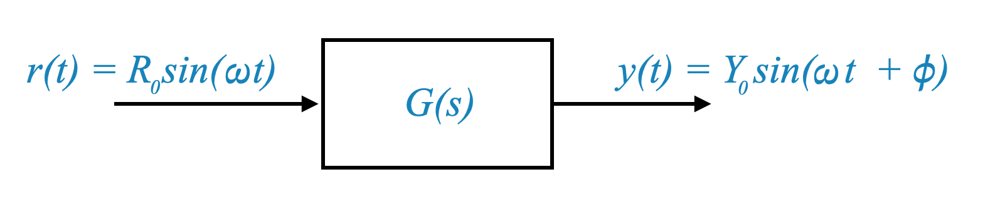
Rappresentazione matematica
Ampiezza e cambiamento di fase: anche la risposta in stato stazionario a un ingresso sinusoidale è sinusoidale, con cambiamenti di ampiezza e fase.
\[ \text{Rapporto di ampiezza} = \frac{Y_0}{R_0} \]
\[ \text{Angolo di fase} = \phi \]
Definizione della risposta in frequenza
Possiamo ora definire formalmente la risposta in frequenza.
Concetto 4: Definizione della risposta in frequenza
Componenti della risposta in frequenza: La risposta in frequenza di un sistema può essere caratterizzata da come questi parametri (rapporto di ampiezza e angolo di fase) variano con la frequenza \(\omega\).
ciò significa che la risposta in frequenza è completamente contenuta nel modello matematico del sistema.
Definizione della risposta in frequenza
l’ampiezza \(|G(j\omega)|\) e la \(\angle{G(j\omega)}\) costituiscono la risposta in frequenza del sistema
Grafici di risposta in frequenza
Quando tracciamo \(|G(j\omega)|\) e \(\angle{G(j\omega)}\) rispetto a \(\omega\) otteniamo i grafici della risposta in frequenza.
Caratterizzazione completa del sistema
Concetto 5: Risposta in frequenza come caratterizzazione completa del sistema
Oltre l’analisi dello stato stazionario: sebbene la risposta in frequenza derivi dalla risposta sinusoidale allo stato stazionario, incapsula l’intero comportamento del sistema, inclusa la risposta ai transitori. Ciò è dovuto alla capacità della trasformata di Fourier di collegare la risposta in frequenza al comportamento nel dominio del tempo.
Vantaggi sperimentali: i grafici della risposta in frequenza possono essere ottenuti sperimentalmente, fornendo una caratterizzazione completa del sistema, anche quando un modello matematico non è disponibile.
Nella nostra analisi, esaminiamo due relazioni chiave: l’ampiezza della funzione di trasferimento, indicata come $ G(j) $, poiché varia con la frequenza \(\omega\), e l’angolo di fase di $ G(j) $ poiché cambia anche con la frequenza. Queste relazioni possono essere rappresentate graficamente, dandoci i cosiddetti grafici della risposta in frequenza. Questi grafici descrivono visivamente il modo in cui il sistema risponde alle diverse frequenze.
Inizialmente, potrebbe sembrare che questi grafici della risposta in frequenza descrivano solo il comportamento del sistema in uno scenario stazionario, ovvero come si comporta il sistema dopo che si è stabilizzato in seguito a eventuali disturbi iniziali. Tuttavia, c’è di più di quanto sembri.
In realtà, questi grafici della risposta in frequenza offrono una caratterizzazione completa del sistema, comprendendo sia le risposte stazionarie che quelle transitorie (temporanee). Questa comprensione completa è possibile grazie a un potente strumento matematico noto come trasformata di Fourier. La trasformata di Fourier ci consente di correlare la risposta in frequenza alla risposta temporale del sistema. In sostanza, ciò significa che dai dati della risposta in frequenza possiamo prevedere come il sistema reagirà a qualsiasi dato input nel tempo. Per fare ciò per diversi tipi di segnali di ingresso, utilizziamo la serie di Fourier per segnali periodici (ripetuti) o la trasformata di Fourier per segnali non periodici (una tantum). In questo modo, otteniamo un quadro completo del comportamento del sistema sia nel dominio della frequenza che in quello del tempo.
Man mano che progrediamo, la nostra attenzione si sposterà principalmente sull’esame dei grafici della risposta in frequenza.
È importante capire che questi grafici, derivati sperimentalmente o con altri mezzi dalla risposta sinusoidale del sistema in una condizione stazionaria, rappresentano in realtà l’intero comportamento matematico del sistema. Ciò include sia le risposte transitorie (a breve termine) che quelle stazionarie (a lungo termine).
La chiave per questa comprensione globale risiede nella trasformata di Fourier. La trasformata di Fourier funge da collegamento cruciale, collegando la risposta transitoria del sistema con la sua risposta in frequenza a stato stazionario. Questa connessione ci consente di utilizzare i grafici della risposta in frequenza come una rappresentazione completa del comportamento del sistema, comprendendo tutti gli aspetti della sua risposta nel tempo.
Implicazioni pratiche
Concetto 6: Applicazioni pratiche e vantaggi
Indipendenza dal modello: l’approccio nel dominio della frequenza dipende meno da un modello matematico preciso, il che è vantaggioso quando tali modelli sono difficili da ottenere o incerti.
Accessibilità sperimentale: la risposta in frequenza può essere misurata direttamente, evitando la necessità di un modello di sistema dettagliato. Ciò è particolarmente utile per i sistemi in cui il modello è sconosciuto o complesso.
Considera una situazione in cui hai accesso all’hardware fisico di un sistema, ma il suo modello matematico è sconosciuto. In queste circostanze, non è possibile utilizzare direttamente il metodo del luogo delle radici per l’analisi o la progettazione, poiché il luogo delle radici richiede un modello matematico noto del sistema. Questo modello assume tipicamente la forma di una funzione di trasferimento o di un modello polo zero.
Tuttavia, se passiamo all’analisi nel dominio della frequenza, il processo diventa più semplice. In questo approccio è possibile iniziare con il test sinusoidale del sistema. Ciò comporta l’applicazione di ingressi sinusoidali all’hardware e la misurazione dell’uscita del sistema in termini di grandezza e angolo di fase. In questo modo, raccogli i dati sulla risposta in frequenza direttamente dall’hardware.
Una volta ottenuti questi dati sulla risposta in frequenza, è possibile tracciare i grafici della risposta in frequenza. Questi grafici forniscono una caratterizzazione completa del comportamento del sistema, catturandone sia le risposte stazionarie che quelle transitorie. Il vantaggio qui è che non è necessario un modello matematico prestabilito, come una funzione di trasferimento, per l’analisi e la progettazione. Questo aspetto è particolarmente significativo perché creare un modello matematico accurato di un sistema può essere un compito impegnativo.
Supponiamo che tu voglia ancora utilizzare il metodo del luogo delle radici, ma tutto ciò che hai sono i dati della risposta in frequenza. Per procedere, è necessario inserire questi dati in un modello polo zero, che può poi essere utilizzato per la progettazione del luogo delle radici. Tuttavia, è importante riconoscere che questo processo di adattamento è approssimativo. È quasi impossibile ottenere una corrispondenza perfetta tra i dati sperimentali della risposta in frequenza e il modello teorico del polo zero. Di conseguenza, il modello che si ottiene per il metodo del luogo delle radici è un’approssimazione.
Al contrario, l’analisi nel dominio della frequenza non richiede questo passaggio di adattamento intermedio. Lavori direttamente con i dati grezzi ottenuti dai tuoi test sinusoidali. Questo uso diretto dei dati sperimentali nell’analisi nel dominio della frequenza semplifica il processo ed evita le approssimazioni e i potenziali errori coinvolti nell’adattamento dei dati a un modello polo zero.
Spero che sia chiaro il motivo per cui l’approccio nel dominio della frequenza è così vitale per gli ingegneri di controllo. Questo approccio non è solo importante, è essenziale. È interessante notare che alcuni dei concetti di prestazione del sistema che utilizziamo nell’ingegneria dei controlli sono comuni anche nella teoria della comunicazione. Gli ingegneri delle comunicazioni spesso si occupano di ingressi sinusoidali o di una combinazione di segnali sinusoidali, il che si allinea bene con la loro attenzione alle funzioni di trasferimento sinusoidali.
Tuttavia, per gli ingegneri di controllo, la situazione è leggermente diversa. Non sempre lavoriamo con ingressi sinusoidali. Infatti, in molti casi, i sistemi che progettiamo e analizziamo potrebbero non incontrare mai input sinusoidali. Tuttavia, preferiamo ancora il formalismo nel dominio della frequenza a causa dei suoi numerosi vantaggi.
Uno di questi vantaggi è una comprensione più chiara delle caratteristiche del rumore di un sistema. L’approccio nel dominio della frequenza ci consente di analizzare e interpretare le caratteristiche di filtraggio del rumore di un sistema in modo più efficace di quanto potremmo osservare esclusivamente gli effetti nel dominio del tempo. Ad esempio, concetti come la larghezza di banda sono compresi in modo più intuitivo nel dominio della frequenza. La larghezza di banda si riferisce al modo in cui un sistema filtra il rumore, che non è rappresentato così chiaramente da parametri nel dominio del tempo come il tempo di salita.
In sintesi, l’approccio nel dominio della frequenza offre diversi vantaggi chiave:
Caratteristiche del rumore: fornisce una visione più chiara del comportamento di filtraggio del rumore del sistema.
Flessibilità con modelli di sistema: questo metodo può funzionare con modelli matematici meno accurati o anche con modelli sperimentali.
Facilità di analisi e progettazione: i metodi nel dominio della frequenza spesso offrono tecniche più semplici e dirette per l’analisi e la progettazione del sistema.
Pertanto, mentre il metodo del luogo delle radici è vantaggioso per visualizzare direttamente le risposte transitorie attraverso i poli a circuito chiuso, l’approccio nel dominio della frequenza eccelle in altre aree critiche, in particolare nell’analisi delle caratteristiche del rumore e nell’offerta di flessibilità con i modelli di sistema.
Luogo delle radici e formalismo nel dominio della frequenza
Metodo del luogo delle radici
Il metodo del luogo delle radici richiede un modello matematico dettagliato del sistema, tipicamente una funzione di trasferimento o un modello polo-zero.
Questo metodo è intuitivo per visualizzare la risposta transitoria in termini di poli ad anello chiuso.
Formalismo nel dominio della frequenza
Nell’analisi nel dominio della frequenza, la modellazione matematica diretta non è un prerequisito.
Si possono invece utilizzare dati sperimentali ottenuti dal test sinusoidale del sistema.
Questo approccio è utile quando l’esatto modello matematico del sistema è sconosciuto o difficile da determinare.
Importanza dell’analisi nel dominio della frequenza
Versatilità: gli ingegneri di controllo spesso lavorano con ingressi non sinusoidali, tuttavia l’approccio nel dominio della frequenza rimane applicabile grazie alla sua versatilità.
Caratteristiche del rumore: comprendere le caratteristiche del rumore di un sistema è più semplice nel dominio della frequenza. Ciò include la larghezza di banda e il comportamento di filtraggio del rumore.
Vantaggi del formalismo nel dominio della frequenza
Filtrazione del rumore: il dominio della frequenza fornisce informazioni più chiare sulle caratteristiche di filtraggio del rumore di un sistema.
Indipendenza dal modello: può funzionare con modelli meno accurati o sperimentali.
Facilità di analisi e progettazione: offre metodi di analisi e progettazione più semplici rispetto al metodo del luogo delle radici.
Natura complementare dei metodi di analisi
Locus delle radici e dominio della frequenza: questi metodi non si escludono a vicenda ma si completano a vicenda, ciascuno con i suoi vantaggi unici.
Evoluzione continua: il campo dell’ingegneria di controllo è in continua evoluzione e non esiste un unico metodo di progettazione infallibile. Pertanto, comprendere vari metodi, compresi quelli che vanno oltre il luogo delle radici e il dominio della frequenza, è fondamentale per un ingegnere di controllo.
Domanda pop-up: Perché si preferisce il formalismo nel dominio della frequenza quando il modello matematico del sistema è sconosciuto?
Risposta: Il formalismo nel dominio della frequenza è preferito perché consente l’analisi e la progettazione direttamente dai dati sperimentali, evitando la necessità di un modello matematico preciso.
Introduzione all’analisi nel dominio della frequenza
Passaggi fondamentali dell’analisi nel dominio della frequenza
Analisi di stabilità
La stabilità viene determinata utilizzando il criterio di Routh-Hurwitz o il luogo delle radici stesso.
Nell’analisi nel dominio della frequenza utilizziamo il criterio di stabilità di Nyquist, una caratteristica centrale di questo approccio.
Specifiche prestazionali
Dominio temporale: le specifiche includono tempo di salita, tempo di assestamento, superamento del picco, ecc.
Dominio della frequenza: le specifiche includono larghezza di banda, picco di risonanza e frequenza di risonanza. Alcune di queste caratteristiche dovranno essere interpretate indirettamente quando tradotte nel dominio del tempo. Questa è la principale limitazione dei metodi nel dominio della frequenza.
Progettazione
Compensatori simili (lag, lead, lag-lead) vengono utilizzati sia nei metodi del luogo delle radici che nel dominio della frequenza. Tuttavia, il processo di progettazione è spesso più semplice nel dominio della frequenza.
Nel contesto della progettazione del dominio del tempo o del dominio s-plane, un elemento critico sono le condizioni di dominanza. Quando queste condizioni non vengono soddisfatte, il ricorso principale spesso si rivolge a tentativi ed errori, lasciando ai progettisti la scelta binaria di accettare o rifiutare il progetto così com’è. Tuttavia, nel dominio della frequenza, il ricorso a tentativi ed errori è significativamente ridotto. Abbiamo invece accesso a metodi più precisi e sistematici per affrontare le sfide progettuali, offrendo una gamma più ampia di soluzioni e aggiustamenti.
Domanda pop-up: Qual è la differenza fondamentale tra le specifiche prestazionali nel dominio del tempo e nel dominio della frequenza?
Risposta: Nel dominio del tempo, le specifiche si concentrano sulle caratteristiche di risposta ai transitori come il tempo di salita e l’overshoot, mentre nel dominio della frequenza sono incentrate sulle caratteristiche di risposta allo stato stazionario come la larghezza di banda e la frequenza di risonanza.
Criterio di stabilità di Nyquist - Stabilità nell’analisi nel dominio della frequenza
Il criterio di stabilità di Nyquist si basa sulla teoria delle variabili complesse e sul Principio dell’Argomento di Cauchy. Fornisce un modo per determinare la stabilità di un sistema analizzando la funzione di trasferimento ad anello aperto nel dominio della frequenza.
Comprendere il criterio
Funzione di trasferimento a ciclo chiuso:
Consideriamo un sistema generale a ciclo singolo in cui la funzione di trasferimento ad anello chiuso è \[ \frac{Y(s)}{R(s)} = \frac{G(s)}{1 + G(s)H(s )} \].
Determinazione della stabilità:
Il denominatore della funzione di trasferimento ad anello chiuso è: $ 1 + G(s)H(s) $, e questa è l’equazione su cui dobbiamo concentrarci.
La stabilità viene determinata analizzando il luogo di $ 1 + G(s)H(s) $ nel piano complesso.
Se nessun punto nella metà destra del piano s, compreso l’asse immaginario, soddisfa $ 1 + G(s)H(s) = 0 $, il sistema è stabile.
In altre parole:
Il piano S: immagina il piano s come un piano complesso in cui ogni punto ‘s’ rappresenta un numero complesso con una parte reale (\(\sigma\)) e una parte immaginaria (\(j\omega\)) .
Regioni di interesse: siamo particolarmente interessati alla metà destra e alla metà sinistra di questo piano s. La metà destra include l’asse immaginario (asse \(j\omega\)).
Definizione di stabilità: Un sistema di controllo è considerato stabile se tutti i poli del circuito chiuso (le soluzioni dell’equazione caratteristica del sistema) si trovano nella metà sinistra del piano s.
Comprendere G(s)H(s) - La funzione di trasferimento ad anello aperto
Composizione di G(s)H(s): Questa funzione rappresenta il prodotto di tutte le singole funzioni di trasferimento nel circuito di controllo quando il circuito è aperto. In genere include funzioni di processo, compensatore e trasferimento del sensore. Questa funzione è nota.
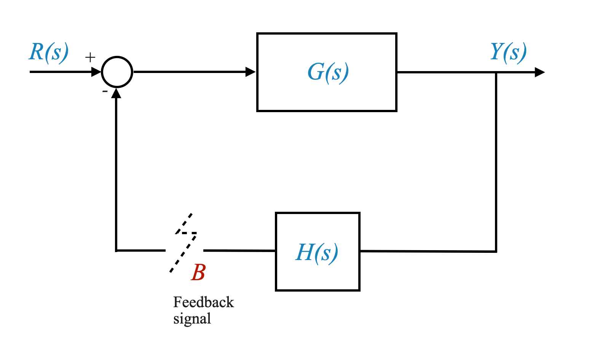
Rappresentazione polinomiale: spesso esprimiamo \(G(s)H(s)\) come rapporto di due polinomi, \(N(s)\) e \(\Delta(s)\).
\[G(s)H(s) = \frac{N(s)}{\Delta(s)}\]
Nella maggior parte dei casi, \(G(s)H(s)\) assume questa forma, tranne in scenari specifici come i tempi morti rappresentati da $ e^{-s_d} $. Per ora limitiamo l’analisi a \(G(s)H(s)\) come rapporto tra due polinomi, ma possiamo estenderla al caso più generale.
Poli e zeri di G(s)H(s)
Poli e zeri: sono fondamentali per determinare il comportamento del sistema. Gli zeri di \(G(s)H(s)\) sono le radici del polinomio al numeratore \(N(s)\), mentre i poli sono le radici del polinomio al denominatore \(\Delta(s)\).
Quantità note: nell’analisi ad anello aperto, questi poli e questi zeri sono noti e costituiscono la base per ulteriori analisi di stabilità.
Stabilità nei sistemi ad anello aperto e ad anello chiuso
Stabilità a circuito aperto: se i poli di \(G(s)H(s)\) si trovano nella metà sinistra del piano s, il sistema è stabile a circuito aperto. Al contrario, se qualche polo si trova nella metà destra, il sistema è instabile a circuito aperto.
Focus sulla stabilità a circuito chiuso: il nostro interesse primario risiede nella stabilità del sistema in condizioni a circuito chiuso, ovvero quando viene applicato il feedback. Anche un sistema instabile a circuito aperto può essere stabilizzato con un feedback appropriato.
Si noti che un sistema instabile a ciclo aperto non ha importanza: vogliamo studiare le proprietà di stabilità quando il ciclo è chiuso, cioè sotto feedback. Allo stesso tempo, mi sono noti i poli (e gli zeri) ad anello aperto.
La funzione $ 1 + $: per analizzare la stabilità a ciclo chiuso, ci concentriamo su questa funzione. Rappresenta il denominatore della funzione di trasferimento ad anello chiuso.
L’ordine del numeratore (\(\Delta(s) + N(s)\)) è \(n\). Questo perché il \(\text{order}[N(s)] \le \text{order}[\Delta(s)]\) garantisce la realizzabilità fisica.
Per questo motivo possiamo quindi riscrivere la nostra funzione come:
Ricorda, se qualsiasi valore di ‘s’ nella metà destra del piano o sull’asse immaginario soddisfa l’equazione (1 + G(s)H(s) = 0), allora il sistema è considerato instabile . Ciò costituisce la base della nostra congettura riguardo alla stabilità del sistema.
Domanda pop-up: Perché ci concentriamo sulla metà sinistra del piano S per la stabilità?
Risposta: la metà sinistra del piano s indica che tutti i poli hanno parti reali negative, che corrispondono a risposte in decadimento nel dominio del tempo, una caratteristica chiave di un sistema stabile.
Domanda pop-up: Qual è il principio alla base del criterio di stabilità di Nyquist?
Risposta: Il criterio di stabilità di Nyquist si basa sul principio dell’argomentazione in analisi complessa, che mette in relazione il numero di circonferenze di un punto da parte di una funzione nel piano complesso al numero di zeri e poli di quella funzione.
Comprendere il piano S e il piano W
Il piano S
Descrizione: Il piano s è un piano complesso in cui ogni punto ‘s’ rappresenta un numero complesso, con una parte reale (\(\sigma\)) e una parte immaginaria (\(j\omega\)).
Rappresentazione di variabili complesse: ogni punto sul piano s è una variabile complessa, rappresentata come σ + jω.
Il piano W
Relazione con il piano S: Quando applichiamo la funzione \(1 + G(s)H(s)\) a un punto sul piano s, si mappa su un punto su un altro piano complesso, chiamato W- aereo.
Variabile complessa sul piano W: anche questo punto mappato sul piano W è una variabile complessa, rappresentata come \(u + jv\).
(vedi immagine a sinistra, sotto.)
Mappatura dal piano S al piano W
Applicazione della funzione: La funzione \(1 + G(s)H(s)\) trasforma ogni punto ‘s’ sul piano s in un punto corrispondente sul piano W.
Mappatura uno-a-uno: per una funzione razionale (come quella che abbiamo), per ogni punto sul piano s, esiste un punto corrispondente unico sul piano W.
(vedi immagine a destra, sotto.)
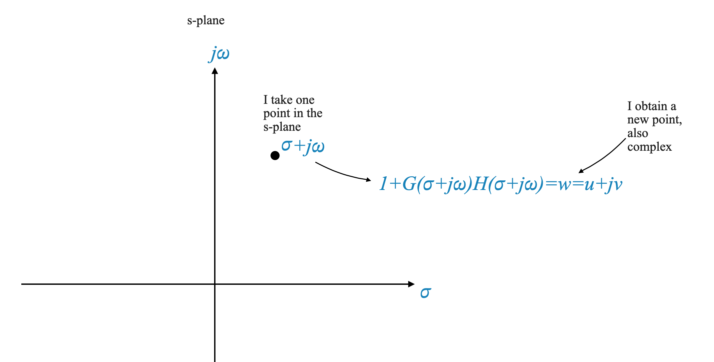
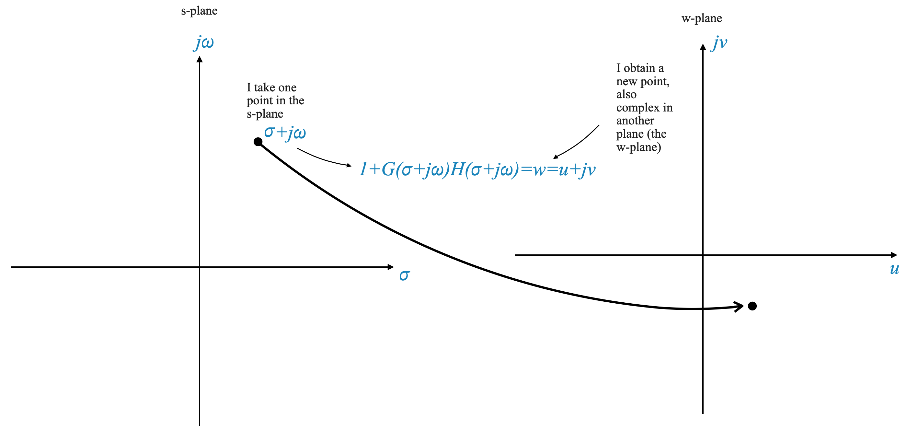
Analisi di stabilità utilizzando la mappatura \(1+G(s)H(s)\)
Obiettivo: Per analizzare la stabilità di un sistema, esaminiamo come la metà destra del piano s, compreso l’asse immaginario, si mappa sul piano W utilizzando $1 + G(s)H(s) $.
Criteri di stabilità: se l’origine del piano W non è coperta da questa mappatura, il sistema è stabile. Se l’origine è coperta, il sistema è instabile.
Questa è l’affermazione equivalente a dire “l’equazione \(1 + G(s)H(s)\) non ha radici nella RHP (incluso l’asse immaginario)”.
Mappatura dei contorni
Concetto di contorni: un contorno nel piano s, che è un insieme connesso di punti (un contorno è un percorso continuo nel piano s, che può essere una curva semplice o un anello chiuso), sarà mappare su un contorno corrispondente nel piano W a causa della natura uno a uno della mappatura.
Mappatura al piano W: quando mappiamo questo contorno al piano W utilizzando la nostra funzione di trasferimento, il percorso risultante nel piano W riflette le caratteristiche dei poli e degli zeri del sistema.
Focus sulla mappatura qualitativa
Analisi qualitativa: il nostro interesse primario non è l’esatta mappatura quantitativa uno a uno, ma la comprensione di come la mappatura influisca qualitativamente sulla stabilità del sistema, in particolare attorno all’origine del piano \(\omega\). In altre parole vorremmo sapere se l’origine del piano W è coperta oppure no.
Nella nostra analisi, l’attenzione si concentra principalmente sulle caratteristiche qualitative di come i contorni specifici nel piano s, che possono circondare punti chiave come zeri o poli, vengono trasformati e rappresentati nel piano W.
In effetti, se dovessimo enfatizzare una mappatura precisa e quantitativa uno a uno tra questi piani, il compito diventerebbe estremamente complesso. Un simile approccio diminuirebbe l’utilità pratica e la rilevanza del criterio di Nyquist nell’analisi dei sistemi.
Domanda pop-up: Perché ci concentriamo sulla mappatura qualitativa piuttosto che quantitativa nell’analisi del sistema?
Risposta: Ci concentriamo sulla mappatura qualitativa perché rivela come si comporta il sistema in prossimità di punti critici, come l’origine del piano \(\omega\), che è cruciale per valutare la stabilità del sistema.
Esempio di mappatura dei contorni
Scenario: Considera un contorno nel piano s che racchiude uno zero della funzione \(1 + G(s)H(s)\) e analizza la sua mappatura sul piano W.
Analisi: la chiave è capire come gli angoli forniti da diversi punti su questo contorno risultano nella mappatura sul piano W.
La nostra funzione di trasferimento svolge il compito di trasformare un punto dal piano s in un punto corrispondente in un nuovo piano, indicato come piano \(\omega\).
Quando selezioniamo numerosi punti sul piano s che sono collegati per formare un percorso continuo (noto come contorno), questi punti vengono mappati per formare un percorso continuo anche nel piano \(\omega\).
Nello specifico, quando scegliamo punti lungo un contorno nel piano s, che è essenzialmente una linea che forma un anello e si ricollega a se stessa, ciò si traduce in un anello chiuso nel piano \(\omega\). Chiamiamo questo ciclo chiuso un plot.
È importante sottolineare che questo grafico nel piano \(\omega\) incapsula informazioni cruciali sul sistema. Trasmette sia il modulo che l’angolo di fase associati a ciascun polo e zero del sistema.
Codice di visualizzazione per mappare un contorno dal piano s al piano \(\omega\).
Possiamo verificarlo con Python come mostrato di seguito.
Questo codice mostra una rappresentazione grafica di un contorno nel piano s e il suo percorso corrispondente nel piano \(\omega\).
import numpy as npimport matplotlib.pyplot as plt# Set up the subplotsfig, axs = plt.subplots(1, 2, figsize=(15, 7))# Improve plot aesthetics (axis, grids, scale)for i inrange(len(axs)): axs[i].axhline(0, color='black', linewidth=1.5, linestyle='--') # horizontal axis axs[i].axvline(0, color='black', linewidth=1.5, linestyle='--') # vertical axis axs[i].axis([-4, 3, -3, 3]) # scale the axis axs[i].grid(True, which='both', linestyle='--', linewidth=0.5) # add grid axs[i].set_aspect('equal', 'box') axs[i].set_xticks(np.arange(-4, 4, 1)) axs[i].set_yticks(np.arange(-3, 4, 1)) axs[i].set_xlabel('Real') axs[i].set_ylabel('Imaginary')axs[0].set_title('S-Plane')axs[1].set_title('$\omega$-Plane')# Plot poles and zeros in the s-plane with annotationspole = (-3, 0)zero = (-2, 0)axs[0].plot(pole[0], pole[1], 'bo', markersize=12) # blue circle for poleaxs[0].plot(zero[0], zero[1], 'rx', markersize=12) # red cross for zeroaxs[0].text(pole[0], pole[1]+0.1, ' Pole', verticalalignment='bottom', horizontalalignment='right')axs[0].text(zero[0], zero[1]-0.2, ' Zero', verticalalignment='top', horizontalalignment='right')# Mapping from s-plane to w-planefor xi in np.linspace(0, 2*np.pi, 100): s_point = np.sin(xi), 3*np.cos(xi) # pick one s-point axs[0].plot(s_point[0], s_point[1], 'm.', markersize=12) # plot the s-point in the s-plane# Map one s_point to a W_point W_point = (complex(s_point[0], s_point[1]) +3)/(complex(s_point[0], s_point[1]) +2) axs[1].plot(np.real(W_point), np.imag(W_point), 'r.', markersize=12) # plot the W_pointplt.show()
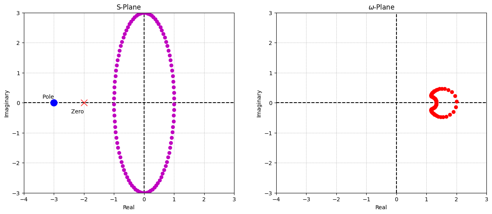
Esempio di analisi del contorno nel piano S e sua mappatura sul piano \(\omega\)
Consideriamo un percorso specifico, o contorno, nel piano s che include uno zero della funzione di trasferimento \(1 + G(s)H(s)\). Il nostro obiettivo è capire come questo contorno si traduce nel piano \(\omega\).
Dato che tutti i poli e gli zeri di \(1 + G(s)H(s)\) sono noti, lo esprimiamo come:
Qui, ogni termine $ (s_1-_i) $ rappresenta un ‘fasore numeratore’, e ogni $ (s_1-_i) $ è un ‘fasore denominatore’.
Calcolo dell’ampiezza e della fase del punto mappato:
Grandezza: La grandezza del punto mappato sul piano \(\omega\) si ottiene moltiplicando ciascun fasore del numeratore e dividendo per ciascun fasore del denominatore.
Fase: l’angolo di fase del punto mappato viene calcolato sommando le fasi dei fasori del numeratore e sottraendo le fasi dei fasori del denominatore.
Punto mappato risultante \(w_1\): questo processo risulta in un punto nel piano \(\omega\), indicato come \(w_1\).
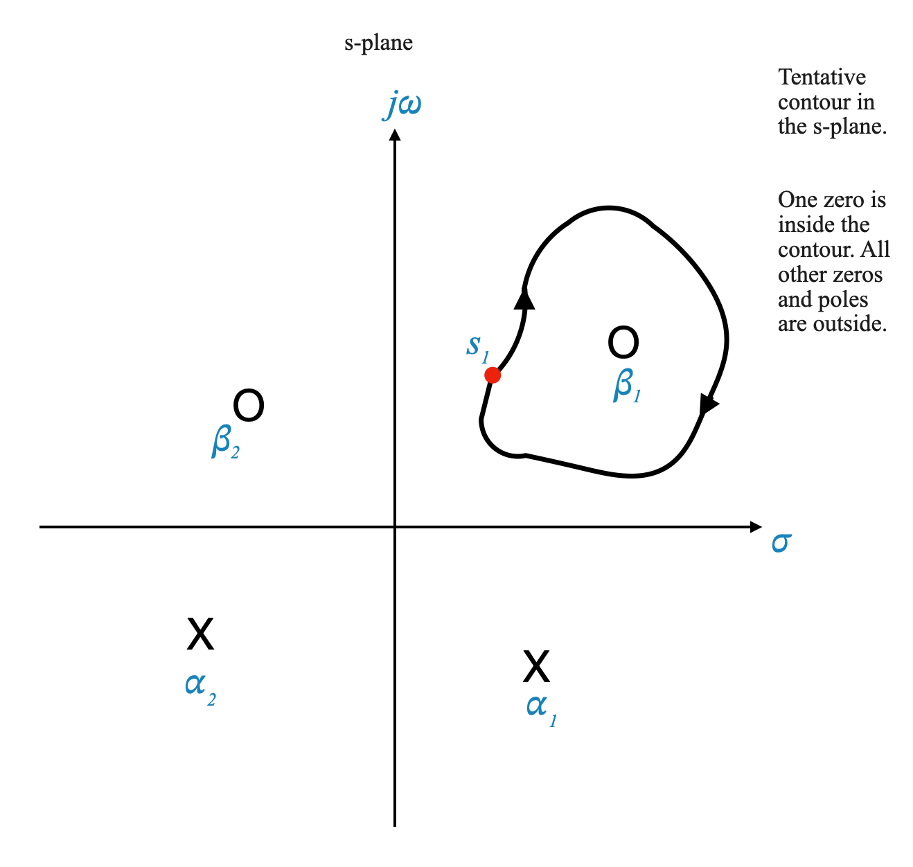
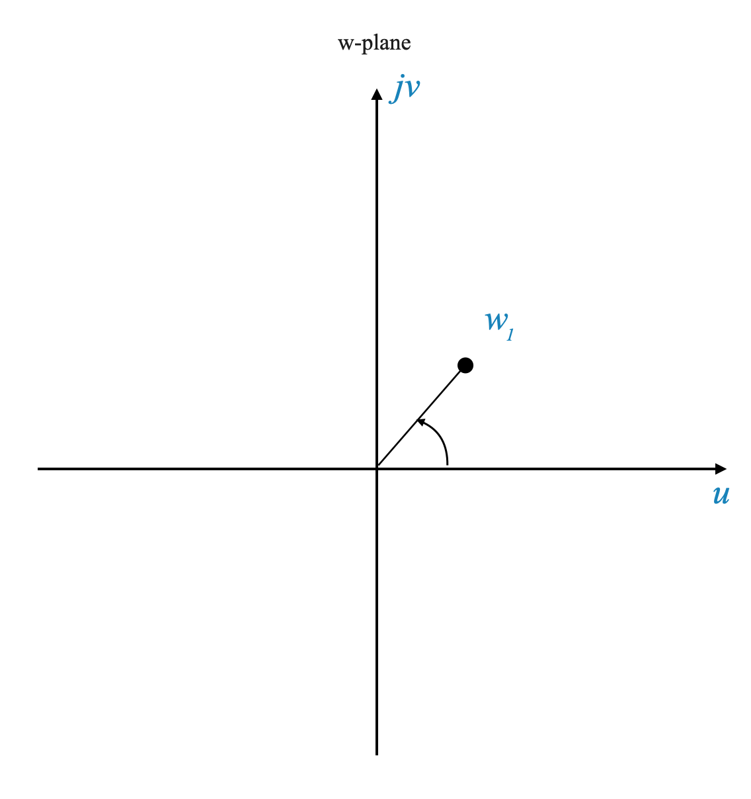
Visualizzazione dei fasori e della mappatura dei contorni
Rappresentazione grafica: I fasori corrispondenti al punto \(s_1\) sono rappresentati graficamente di seguito (a sinistra), mostrando come contribuiscono al processo di mappatura.
Movimento e mappatura del contorno: Mentre continuiamo a muoverci lungo il contorno nel piano s, diciamo in senso orario, creiamo un contorno corrispondente nel piano \(\omega\) (a destra sotto).
import numpy as npimport matplotlib.pyplot as pltfrom ipywidgets import interact, FloatSlider# Define the transfer functiondef transfer_function(s):return s +2# Zero of the transfer functionzero =-2# Define the contour in the s-plane (a circle of radius 3)def s_plane_contour(theta):return3* np.exp(1j* theta)# Map the contour to the omega-plane using the transfer functiondef omega_plane_mapping(s):return transfer_function(s)# Pre-calculate all the points on the contour for the omega-planetheta_values = np.linspace(0, 2*np.pi, 300)omega_points = [omega_plane_mapping(s_plane_contour(theta)) for theta in theta_values]# Function to plot the contoursdef plot_contours(theta): s_point = s_plane_contour(theta) omega_point = omega_plane_mapping(s_point) fig, axs = plt.subplots(1, 2, figsize=(12, 6))# Plotting in the s-plane axs[0].plot(np.real(s_point), np.imag(s_point), 'ro', label='Current Point') # current point axs[0].plot(zero, 0, 'gX', markersize=10, label='Zero') # zero of the transfer function circle = plt.Circle((0, 0), 3, color='b', fill=False) axs[0].add_artist(circle) axs[0].set_xlim([-4, 4]) axs[0].set_ylim([-4, 4]) axs[0].axhline(0, color='black') axs[0].axvline(0, color='black') axs[0].grid(True) axs[0].set_title('S-Plane') axs[0].set_xlabel('Real') axs[0].set_ylabel('Imaginary') axs[0].legend()# Plotting in the omega-plane axs[1].plot([np.real(wp) for wp in omega_points], [np.imag(wp) for wp in omega_points], 'b-', alpha=0.7) # all points axs[1].plot(np.real(omega_point), np.imag(omega_point), 'ro', label='Current Point') # current point axs[1].set_xlim([-5, 5]) axs[1].set_ylim([-5, 5]) axs[1].axhline(0, color='black') axs[1].axvline(0, color='black') axs[1].grid(True) axs[1].set_title('$\omega$-Plane') axs[1].set_xlabel('Real') axs[1].set_ylabel('Imaginary') axs[1].legend() plt.show()# Create a slider for interactive plotinteract(plot_contours, theta=FloatSlider(min=0, max=2*np.pi, step=0.01, value=0, description='Theta:'))
<function __main__.plot_contours(theta)>
Consideriamo ancora una volta il nostro contorno arbitrario:
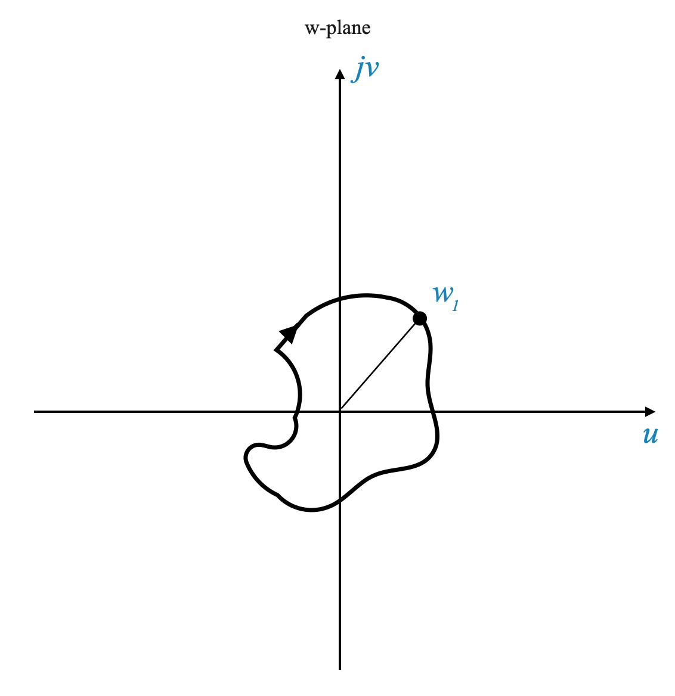
Consideriamo il comportamento dei singoli fasori, come il fasore $ (s - _1) $, mentre si muovono lungo un contorno specifico nel piano s.
**Fasore $ (s - _1) $**: Mentre viaggiamo lungo il contorno che include lo zero $ _1 $, il fasore $ (s - _1) $ contribuirà a un cambiamento totale dell’angolo. Quando inizi da un certo punto del contorno e ti muovi completamente attorno ad esso, la modifica dell’angolo apportata da $ (s - _1) $ ammonta a $ -2$ radianti.
**Fasore $ (s - _2) $**: Ora, se consideriamo un fasore diverso, $ (s - _2) $, dove $ _2 $ non è racchiuso dal contorno, lo scenario cambia. Mentre segui lo stesso contorno partendo da un punto e ritornando ad esso, la variazione netta dell’angolo apportata da $ (s - _2) $ finisce per essere zero. Questo perché qualsiasi variazione angolare positiva durante una parte del viaggio viene annullata da una corrispondente variazione negativa dell’angolo in un’altra parte.
Questa comprensione è cruciale per il criterio di stabilità di Nyquist. Ci dice che:
Se uno zero della funzione $ 1 + G(s)H(s) $ è racchiuso all’interno del contorno, contribuisce con un angolo di $ 2$ radianti alla variazione totale dell’angolo mentre attraversiamo il contorno.
Se tutti gli altri poli e zeri si trovano all’esterno del contorno, non contribuiscono alla variazione dell’angolo netto.
Pertanto, indipendentemente dalla forma del contorno, se racchiude uno zero di $ 1 + G(s)H(s) $, il contorno risultante mappato nel piano \(\omega\) circonderà l’origine esattamente una volta, e in una direzione in senso orario, a causa della variazione angolare totale di $ -2$ radianti.
Caso in cui è racchiuso uno zero
Racchiudere uno Zero: Supponiamo che il nostro contorno nel piano s circondi uno zero della funzione \(1 + G(s)H(s)\). In questo scenario, mentre attraversiamo il contorno in senso orario, la variazione angolare totale apportata da questo zero racchiuso è $ -2$ radianti.
Circonferenza risultante: Ciò significa che il contorno corrispondente nel piano \(\omega\) circonderà l’origine in senso orario esattamente una volta.
Caso di recinzione di un palo
Racchiudere un Polo: Ora, immagina invece che il contorno racchiuda un polo (non uno zero) di \(1 + G(s)H(s)\). Tutti gli altri zeri e poli sono fuori da questo contorno.
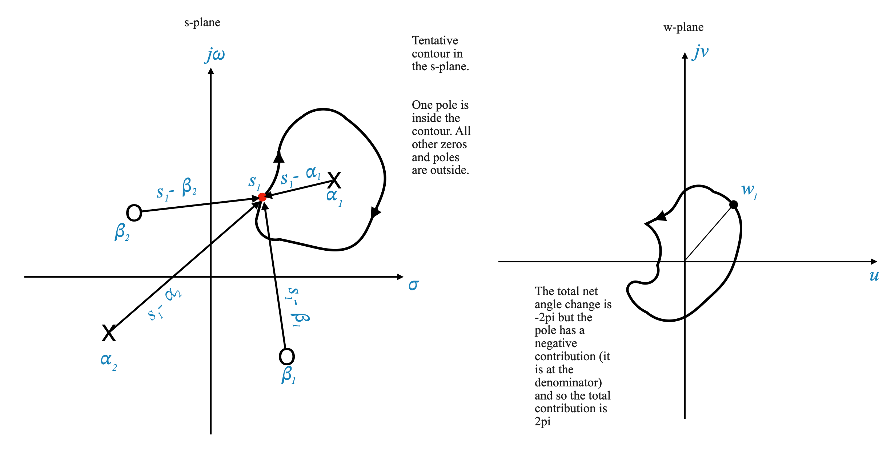
Effetto sul contributo angolare: il contributo angolare per un polo è l’opposto di quello per uno zero. Pertanto, la variazione totale dell’angolo è $ +2$ radianti, indicando un accerchiamento in senso antiorario nel piano \(\omega\).
Circondamento netto: Ciò si traduce in una rotazione completa in senso antiorario attorno all’origine nel piano \(\omega\).
Combinazione di poli e zeri
Combinazione di poli e zeri: considera un contorno che racchiude entrambi i poli e uno zero. Ad esempio, un contorno con due poli e uno zero.
Calcolo della rotazione netta: la rotazione netta nel piano W è determinata dalla differenza tra rotazioni in senso antiorario (contribuite dai poli) e rotazioni in senso orario (contribuite dagli zeri). Nel nostro esempio, abbiamo due rotazioni in senso antiorario (poli) e una rotazione in senso orario (zero), risultando in una rotazione netta in senso antiorario (\(2 - 1 = 1\)).
Implicazioni per il criterio di Nyquist
Queste osservazioni costituiscono la base del criterio di stabilità di Nyquist. È importante notare che, sebbene abbiamo discusso gli aspetti qualitativi della mappatura, la forma esatta del contorno nel piano W non è la nostra preoccupazione principale.
Con questa comprensione, siamo ora pronti ad approfondire l’affermazione e l’applicazione del criterio di stabilità di Nyquist nell’analisi del sistema di controllo.
Principio argomentativo di Cauchy
Possiamo individuare la differenza relativa tra il numero di poli e di zeri all’interno di un contorno contando quante volte il diagramma gira intorno all’origine e in quale direzione.
Il criterio di stabilità di Nyquist
Applicheremo il Principio dell’Argomento di Cauchy a un contorno specifico nel piano s, come illustrato a sinistra nella figura seguente.
Questo contorno circonda l’intero semipiano destro (RHP), compreso l’asse immaginario. Questo contorno è chiamato Contorno di Nyquist.
Per l’analisi iniziale, assumeremo che non vi siano poli situati sul contorno stesso. Considereremo le implicazioni della presenza di poli sul contorno in una fase successiva.
Attraverso la funzione \(1 + G(s)H(s)\), questo contorno specifico nel piano s viene mappato sul piano \(\omega\), mostrato a destra nell’immagine.
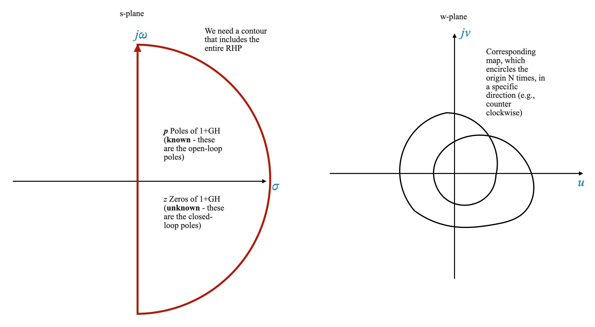
Punti chiave da notare:
Poli ad anello aperto: I poli di \(1 + G(s)H(s)\) sono gli stessi poli ad anello aperto del sistema, che conosciamo dagli zeri e dai poli di \(G(s )H(s)\).
Poli ad anello chiuso: gli zeri di \(1 + G(s)H(s)\) corrispondono ai poli ad anello chiuso del sistema. Questi zeri non sono noti in anticipo e sono ciò che miriamo a determinare per l’analisi di stabilità.
Secondo il criterio di Nyquist:
Se la mappatura nel Piano W circonda l’origine \(N\) volte in senso antiorario, questo numero di accerchiamenti (\(N\)) è matematicamente espresso come il numero di poli di \(1 + G(s)H(s )\) (indicato come \(P\)) meno il numero dei suoi zeri (indicato come \(Z\)). Questa relazione è catturata nell’equazione di Nyquist:
\[
N = P-Z
\]
L’equazione di Nyquist costituisce la base del Criterio di Nyquist, che asserisce che il numero totale di accerchiamenti in senso antiorario dell’origine nel Piano W da parte della funzione \(1 + G(s)H(s)\) è uguale alla differenza tra il numero dei suoi poli e degli zeri.
Pertanto, per determinare la stabilità a circuito chiuso del sistema, è necessario mappare il contorno sul piano W e contare il numero di volte (\(N\)) che questa mappatura circonda l’origine.
Dall’equazione di Nyquist otteniamo direttamente quanti zeri di \(1+G(s)H(s)\) ci sono nel semipiano destro.
Commenti laterali
Per quanto riguarda lo scenario in cui uno zero di \(1 + G(s)H(s)\) (polo in anello chiuso) giace sul contorno, sarà importante considerarne l’impatto. Se sul contorno è presente uno zero, ciò implica che il contorno passerà attraverso l’origine nel piano W. Tale situazione indica tipicamente una condizione di marginale stabilità per il sistema. In altre parole, quando il contorno nel piano s, trasformato dalla funzione \(1 + G(s)H(s)\), passa per l’origine nel piano W, rappresenta un caso speciale in cui gli zeri della funzione (che sono i poli del circuito chiuso) coincidono con il contorno. Questo scenario richiede un’attenta analisi in quanto riguarda il margine di stabilità del sistema.
Un’altra considerazione importante si pone quando un polo della funzione di trasferimento ad anello aperto $ G(s)H(s) $ cade sul contorno di Nyquist. In tali casi, la mappatura di quel punto sul piano W risulta in un valore infinito. Questo evento richiede particolare attenzione nell’analisi della stabilità del sistema.
Gli zeri di \(G(s)H(s)\) non creano alcun problema. A differenza dei poli, che possono mappare all’infinito sul piano W e complicare l’analisi (poiché i valori infiniti richiedono una considerazione speciale), gli zeri non danno luogo a valori così estremi nel processo di mappatura. Pertanto, non aggiungono complessità all’interpretazione grafica del diagramma di Nyquist.
Traslare il diagramma di Nyquist
Nel nostro studio dei sistemi di controllo ci siamo concentrati sull’analisi del diagramma di Nyquist della funzione
\[
1 + G(s)H(s)
\]
e ne osservò il comportamento in termini di numero di volte che gira attorno all’origine nel piano W.
Creare il diagramma di questa funzione può essere difficile a causa della sua complessità. Per semplificare la nostra analisi possiamo invece considerare il Nyquist Plot della sola funzione $ G(s)H(s) $. Questo approccio prevede il conteggio degli accerchiamenti attorno al punto critico \(-1 + 0j\) sul piano complesso.
Questo metodo non solo semplifica il processo di tracciamento ma ci fornisce anche le informazioni essenziali necessarie per valutare la stabilità del sistema di controllo.
Interpretazione del criterio di stabilità di Nyquist
Il criterio si riferisce alla risposta in frequenza di un sistema ed è espresso come:
\[
N = P-Z
\]
Dove: - \(N\) è il numero di accerchiamenti in senso antiorario del punto $-1+0j $ nel piano W. - \(P\) è il numero di poli di \(1 + G(s)H(s)\) nella metà destra del piano s. - \(Z\) è il numero di zeri di \(1 + G(s)H(s)\) sullo stesso piano.
Applicazione del criterio
Per applicare questo criterio, seguiamo questi passaggi:
Mappatura del contorno: considera un contorno nel piano s che comprende la metà destra, compreso l’asse immaginario. Assumiamo inizialmente che nessun polo si trovi direttamente su questo contorno (affronteremo lo scenario con i poli sul contorno in seguito).
Trasformazione nel piano W: questo contorno viene quindi mappato sul piano W tramite la funzione \(G(s)H(s)\).
Conteggio degli accerchiamenti: il numero di volte in cui questo contorno mappato circonda il punto -1 nel piano W (in senso antiorario) ci dà \(N\). Ciò significa anche che \(N\) è positivo quando il contorno circonda il punto -1 in senso antiorario.
Determinazione della stabilità:
Usiamo l’equazione \(N = P - Z\) per determinare \(Z\) gli zeri di \(1 + G(s)H(s)\) nella RHP, che corrispondono ai poli ad anello chiuso nella RHP.
Sistemi stabili a circuito aperto
Per un sistema stabile a ciclo aperto (dove \(P = 0\)), il sistema a ciclo chiuso è stabile se il diagramma di Nyquist nel piano W non circonda l’origine.
Quando \(P=0\) (il sistema ad anello aperto è stabile)
\(Z=N \Rightarrow N=0\) oppure nessun accerchiamento del punto \(-1\) per avere un sistema a ciclo chiuso stabile (per stabilità \(Z=0\)).
Questo è il caso che incontriamo più spesso.
Ad esempio, dato un sistema stabile ad anello aperto vorremmo un diagramma di Nyquist come:
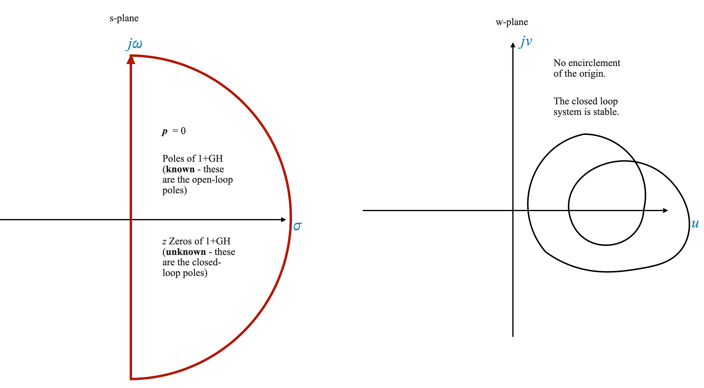
Sistemi instabili a circuito aperto
Per un sistema instabile ad anello aperto, diciamo con un polo nel semipiano destro (\(P = 1\)), il sistema è stabile in funzionamento ad anello chiuso se il diagramma G(s)H(s) circonda il punto \(-1 + j0\) una volta in senso antiorario.
Per garantire che non ci siano zeri (radici di \(1+G(s)H(s)\)) nel semipiano destro (\(Z=0\)), dobbiamo avere esattamente 1 in senso antiorario (CCW) accerchiamento del punto -1 per ciascun polo ad anello aperto nel semipiano destro:
\[
P = N
\]
Controlla la tua comprensione
Domanda: Cosa significa \(N = P - Z\) nel criterio di Nyquist?
Risposta: Rappresenta la relazione tra il numero di circonferenze in senso antiorario dell’origine nel piano W, il numero di poli e il numero di zeri della funzione di trasferimento ad anello aperto nella metà destra del s-aereo.
Domanda: Per un sistema stabile a ciclo aperto, qual è la condizione chiave per la stabilità a ciclo chiuso?
Risposta: Il diagramma di Nyquist di \(G(s)H(s)\) nel piano W non dovrebbe circondare il punto \(-1 + j0\).